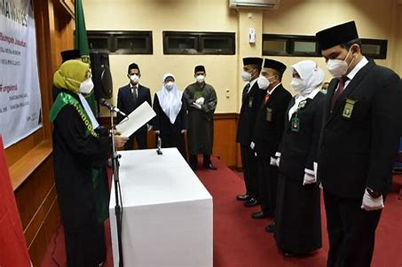
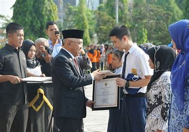

Berita Terkini
Pelantikan dan Serah Terima Jabatan Kepala Direktorat di lingkungan YPI Al Azhar
Rabu, 14 Desember 2022, bertempat di Aula Buya Hamka telah berlangsung acara serah terima jabatan 2 (dua)…
December 15, 2022 Hilma Humas

Berita Terkini
Sukses Kegiatan Alpen South Festival dan Alpen Cup oleh OSIS SMAIA 2 Pejaten, Kepala Sekolah Berikan Apresiasi
SMA Islam Al Azhar 2 Pejaten (Alpen), Sabtu, 10 Desember 2022 mengadakan Clossing Alpen South Festival. Kegiatan ini sebagai akhir…
December 15, 2022 Hilma Humas